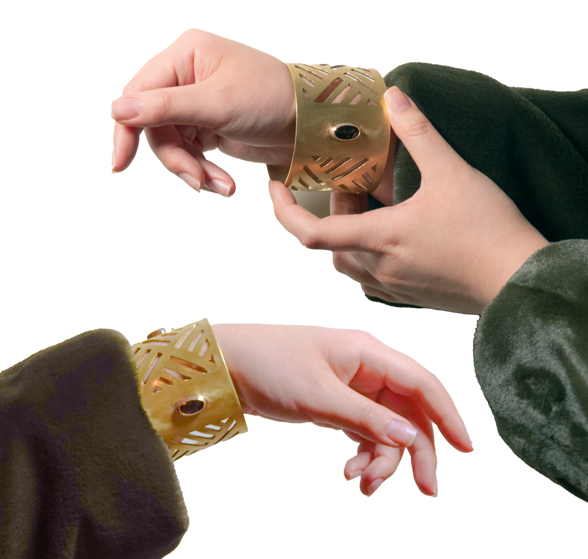

Jewelry & material exploration
From window to wrist
A memory of Suzhou, translated into a wearable object.

The starting point
Remembering through a pattern.
The bracelet takes its starting point from the garden windows of my hometown, Suzhou. Their decorative patterns, known as 窗花, frame views and create rhythms of light and shadow.
Taking shape
Changing the scale.
A continuous perforated pattern wraps around the wrist, carrying the repetition and openness of a garden window into a much smaller form. Fabrication techniques integrate a stone setting into the patterned metal surface.
The experience
A familiar place, held differently.
The stone becomes a focal point within the repeated geometry. The piece brings together ornament, material craft, and a shift in scale: a remembered detail of a place becomes something that can be worn.
{kind=link}

Project notes
This bracelet is part of my personal material practice. It connects a memory of home with experiments in metal and stone.
Project notes
- Materials: Metal, stone